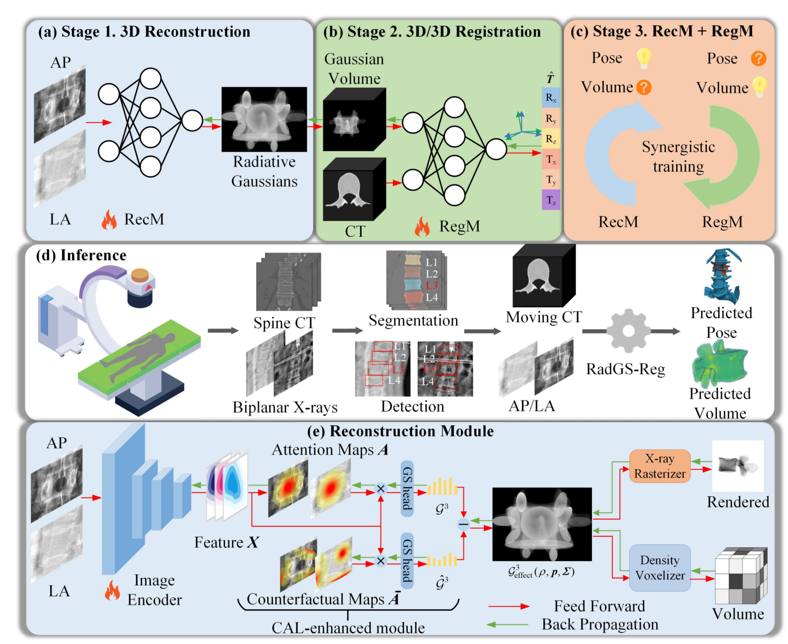
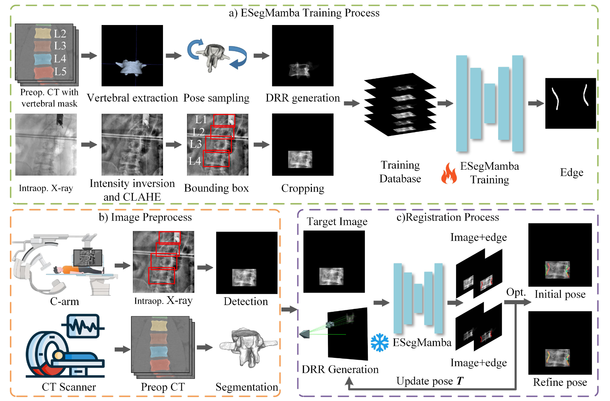
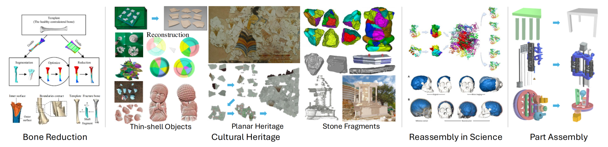
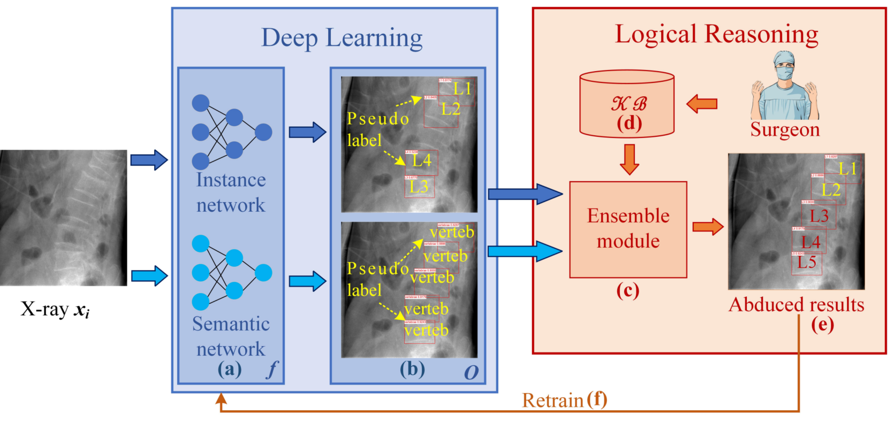
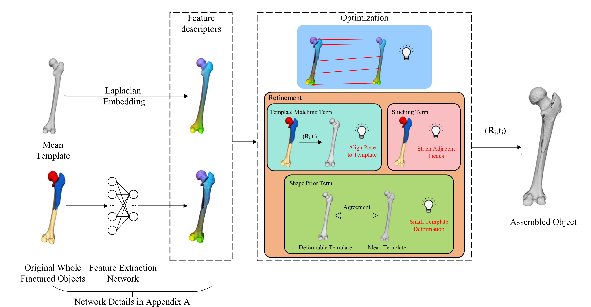
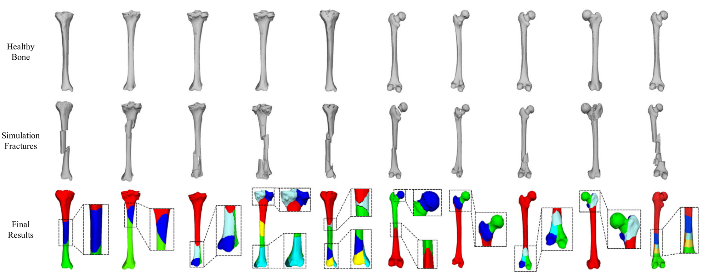
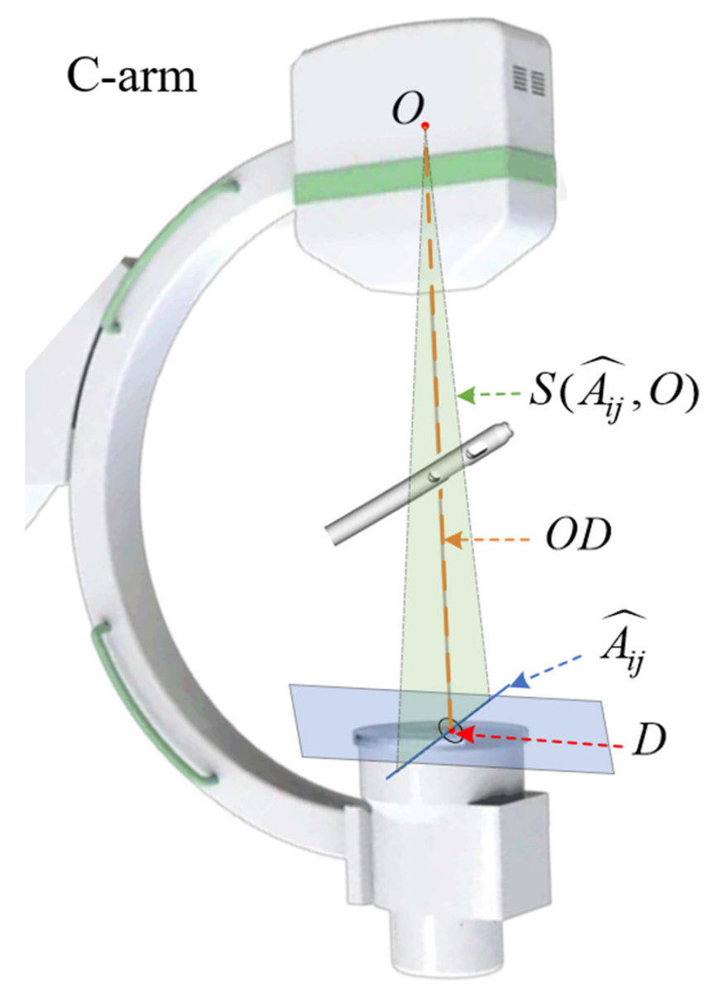
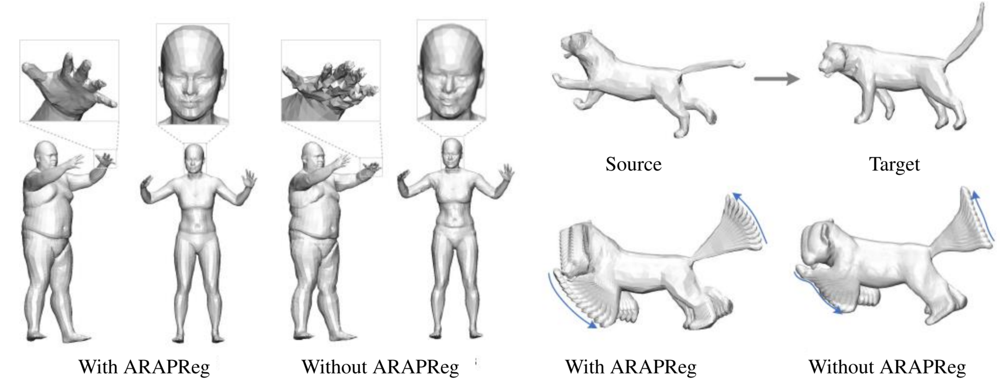

Selected Publications
2025


Shen A, Jiang J*, Tang Y, Chen Z, Nong L, Chen Q, Wang F, Wuse X
Semantic Edge-Guided Single-View 2D/3D Registration for Vertebrae in X-rays
Semantic Edge-Guided Single-View 2D/3D Registration for Vertebrae in X-rays

Lu J, Liang Y, Han H, Jiang J, et al.
A Survey on Computational Solutions for Reconstructing Complete Objects by Reassembling Their Fractured Parts
A Survey on Computational Solutions for Reconstructing Complete Objects by Reassembling Their Fractured Parts
2024

Jiang J*, Shuai L, Zeng Q
ABLSpineLevelCheck: Localization of Vertebral Levels on Fluoroscopy via Semi-supervised Abductive Learning
ABLSpineLevelCheck: Localization of Vertebral Levels on Fluoroscopy via Semi-supervised Abductive Learning
2023

Deng Z, Jiang J*, Chen Z, et al.
TAssembly: Data-driven Fractured Object Assembly
TAssembly: Data-driven Fractured Object Assembly

Deng Z, Jiang J*, Huang R, et al.
Synergistically Segmenting and Reducing Fracture Bones via Whole-to-Whole Deep Dense Matching
Synergistically Segmenting and Reducing Fracture Bones via Whole-to-Whole Deep Dense Matching

Wang F, Jiang J*, Deng Z, et al.
A Deep-Learning Approach for Locating the Intramedullary Nail's Holes Based on 2D Calibrated Fluoroscopic Images
A Deep-Learning Approach for Locating the Intramedullary Nail's Holes Based on 2D Calibrated Fluoroscopic Images
2021

* Corresponding author